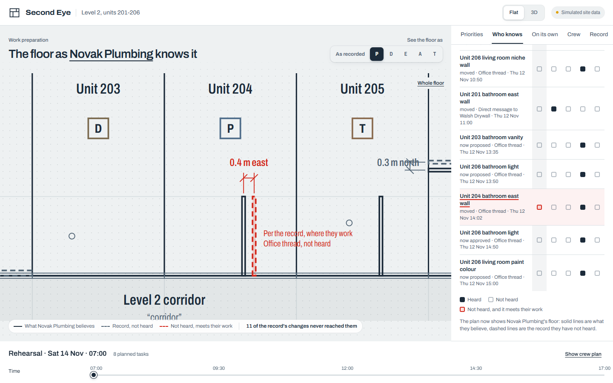
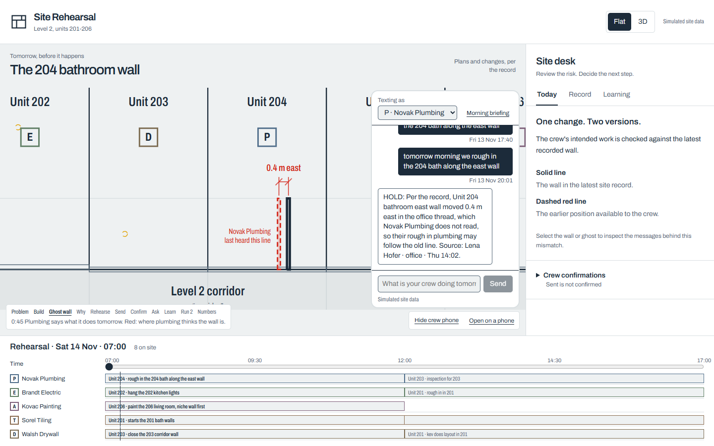

Talona track · Context for the Physical World
See tomorrow's mistake
before it gets built.
Crew messages become a sourced record of one floor. Every stated plan is checked against it, and a conflict is drawn as a red ghost wall before work starts.
Live demo: site-rehearsal.onrender.com
The problem
The architect moves the Unit 204 bathroom wall 40 cm east. Rev C goes into the office thread.
The plumbing crew is not in the office thread. Their version of the floor still has the old line.
The plumbing lead writes in the site group:
They run pipe to a line that isn't there any more. On Monday someone pays for it.
Nobody did anything wrong. The information existed; it just didn't reach the crew before they acted.
The idea
Every change keeps the thread it was said in. From that history we derive, per crew, where that crew believes each wall is: who heard what.
A ghost wall is the measured difference between one crew's belief and the record, at the place where its planned work meets it.
Thread membership is a proxy for what a crew could have seen, not proof of what anyone read.

"See the floor as" a crew: solid lines are what Novak Plumbing believes, dashed red is the record they have not heard. The matrix shows every change against every crew. Simulated site data.

Presenter beat 3. The plumber's message arrives; the phone answers HOLD with the reason and the source. Simulated site data.
The ghost wall
Dashed red: where plumbing will measure from.
Solid black: where the wall is, per the record.
The crew is told to hold, quoting both messages. The superintendent sends a correction with one tap. It stays amber until the crew confirms that exact revision.
How it works
Measured, not assumed
| Evaluation | Caught | Missed | False alarms | Notes |
|---|---|---|---|---|
| Golden replay | 15 / 15 | 0 | 0 | Development and regression set, 190 messages. Live checks alone 14 of 15; the evening rehearsal catches the last one. |
| Challenge, run 1 | 6 / 14 | 8 | 5 | Separate set of 64 messages, written and committed before its first run. |
| Challenge, run 2 | 8 / 14 | 6 | 4 | After a calendar-prompt fix that run 1 motivated. No longer unseen. |
| Challenge, run 3 | 9 / 14 | 5 | 2 | After general extraction rules. Not unseen. |
From eval/results.json, results.detail.json and results.challenge*.json. All data is simulated: these are not field results. The challenge misses (cancellations, future plans, uncertain prerequisites) stay in the reports so the prepared demo is not mistaken for general accuracy.
Limits and what's next
See tomorrow's mistake before it gets built. site-rehearsal.onrender.com